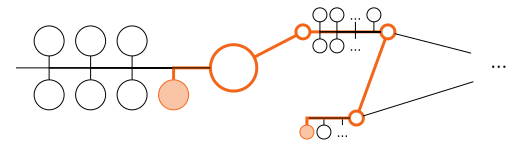
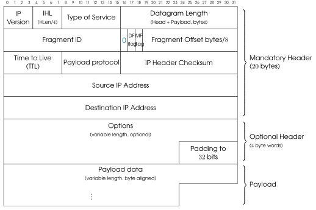
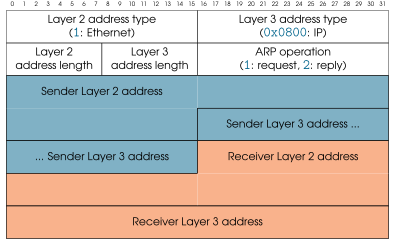

[8] Capa 3: comunicació entre xarxes (Internet)¶


Funcionalitats¶
El protocol d’Internet (IP) permet intercanviar datagrames (PDU de la capa 3) entre dispositius de diferents LANs (xarxa d’àrea local). El seu sistema d’adreçament identifica els dispositius globalment i fa possible encaminar els datagrames allà on calgui.
Els dispositius que es comuniquen via IP poden pertànyer a LANs basades en tecnologies diferents i amb tipus d’adreça MAC diferents. Això té dues implicacions:
-
Un datagrama que “cap” en la MTU de la LAN d’origen pot ser massa gran per a la MTU de la LAN de destinació (o de qualsevol LAN intermèdia). IP defineix un sistema de fragmentació per dividir els datagrames, que només es reconstrueixen a la destinació final.
-
Quan enviem un datagrama, coneixem l’adreça IP del dispositiu destinatari, però no necessàriament la seva adreça MAC. Només necessitarem aquesta MAC si formem part de la LAN de destinació. IP fa servir ARP per traduir adreces IP conegudes a adreces MAC del tipus de la LAN de destinació.
Els datagrames poden viatjar per xarxes que no controlen ni l’origen ni la destinació, de manera que els datagrames es poden perdre, desordenar i duplicar. La capa 3 no proporciona mecanismes per gestionar-ho; les capes superiors han d’implementar mecanismes de protecció quan calgui (p. ex., per implementar els fluxos de dades de TCP).

Protocols¶
La versió 4 d’IP és el protocol que s’utilitza a la capa 3, és a dir, és comú a pràcticament totes les comunicacions de la Internet tal com la coneixem avui. Fa molts anys que Internet lluita per fer la transició cap a IPv6, però el procés no s’ha completat i només IPv4 ofereix cobertura global.
IPv4 delega en el protocol ARP la traducció d’adreces IP conegudes a adreces MAC dins de cada LAN. ARP no fa servir datagrames IP.
Els protocols següents encapsulen les seves PDU en el payload (càrrega útil) dels datagrames IP:
-
Transport Control Protocol (TCP)
-
User Datagram Protocol (UDP)
-
Internet Control Message Protocol (ICMP)
Nota
Les ordres ip address, ip route i ip neighbor (entre d’altres) et permeten consultar diversos aspectes de la teva configuració IP.
[8.1] Adreçament de la capa 3¶
Les adreces IPv4 tenen \(32\) bits. Normalment es presenten a les persones en el format quad decimal, p. ex.,
142.250.201.67
Les adreces IPv6 tenen \(128\) bits (\(12\) bytes), és a dir, són \(4\) vegades més grans que una adreça IPv4. S’expressen en format hexadecimal, p. ex., com es mostra a continuació. Fixa’t que dos signes de dos punts “::” indiquen “omple amb zeros”, i que “::” només pot aparèixer una vegada per adreça IPv6.
fe80::f524:a73a:e946:7c02
Nota
Quan una adreça IPv6 forma part d’un URL, s’envolta de claudàtors, p. ex., https://[fe80::f524:a73a:e946:7c02]/.
Adreces públiques i reservades¶
La majoria d’adreces IP són públiques i úniques a tot Internet, és a dir, l’adreça IP anterior té el mateix significat a tot el món: identifica un únic dispositiu connectat. Moltes adreces són reservades/privades i només es poden fer servir dins d’un àmbit concret (p. ex., una LAN) o en una situació concreta. Algunes de les més habituals són les següents (n’hi ha algunes més, també per a IPv6):
| Bloc d’adreces IP | Àmbit de l’adreça |
|---|---|
127.*.*.* |
Aquest ordinador (localhost) |
10.*.*.* |
Aquesta LAN |
172.16.*.* |
Aquesta LAN |
192.168.*.* |
Aquesta LAN |
0.*.*.* |
Usos especials |
169.254.*.* |
Usos especials |
255.255.255.255 |
Usos especials |
Exercici 8.1
-
Quantes adreces IPv4 diferents hi ha (incloent-hi les reservades i privades)?
-
Són suficients ara i en el futur?
-
És problemàtic que una adreça com
192.168.0.1l’estiguin fent servir simultàniament milers (probablement milions) d’ordinadors a Internet ara mateix? -
Quina d’aquestes correspon a adreces link local?
[8.1.2] Màscares de xarxa¶
Els \(32\) bits d’una adreça IP es poden dividir en dues parts mitjançant una màscara de xarxa:

La primera part identifica la LAN o el grup de LANs a què pertany un dispositiu. La segona part identifica un únic dispositiu dins de la LAN. La màscara de xarxa determina quants bits s’assignen a cada part.
A la figura anterior, la màscara de xarxa assigna 10 bits a l’identificador de xarxa i 22 al del dispositiu. Aquesta màscara pot anar des de \(0\) (tots els bits són identificador de dispositiu) fins a \(32\) (tots els bits són identificador de xarxa).
Les màscares de xarxa es presenten a les persones de dues maneres principals:
-
/N, on \(N\) és el nombre de bits assignats a l’identificador de xarxa. És el que es fa servir en el format CIDR. -
El format quad decimal (
A.B.C.D) de \(N\) bits a1, seguits de \((32-N)\) bits a0.
Exercici 8.2
La màscara de xarxa de l’exemple anterior es pot expressar en binari (tot i que no és gaire pràctic):

-
Expressa la màscara de xarxa de l’exemple anterior en els formats CIDR i quad decimal.
-
Quina és la teva IP i la teva màscara de xarxa? Expressa-les de les mateixes dues maneres.
Nota
Les màscares de xarxa també es fan servir a IPv6, però amb un valor màxim de \(N\) de \(128\) en lloc de \(32\).
Blocs d’adreces IP¶
Les màscares de xarxa es combinen amb adreces IP per definir blocs d’adreces IP que comencen pels mateixos \(N\) bits (on \(N\) és la màscara de xarxa). Per exemple, 192.168.3.0/24 (en format CIDR) i 192.168.3.0/255.255.255.0 fan referència al bloc d’adreces entre 192.168.3.0 i 192.168.3.255, ambdues incloses (192.168.3.* en la notació informal de la taula anterior).
Exercici 8.3
Els blocs IP poden ser més petits, iguals o més grans que una xarxa IP. Dona exemples en què un bloc IP faci referència a:
-
Una única IP.
-
La meitat de les adreces IP de la xarxa
192.168.3.0/24. -
Totes les adreces de la xarxa
192.168.3.0/24, més \(256\) adreces més. -
Totes les IP possibles.
Exercici 8.4
-
Es pot expressar qualsevol màscara de xarxa com una adreça IP?
-
Enumera totes les màscares de xarxa possibles.
Quan es fa referència a un bloc d’adreces (com una LAN), l’adreça IP d’aquesta combinació IP + màscara de xarxa ha de tenir tots els bits de l’identificador de dispositiu a 0. D’aquesta manera, 192.168.3.0/24 fa referència correctament a una xarxa, però 192.168.3.1/24 fa referència, en canvi, a un dispositiu (el que té la IP 192.168.3.1) d’aquesta xarxa (192.168.3.0/24).
[8.1.4] LANs i màscares de xarxa¶
Les màscares de xarxa no han de ser necessàriament múltiples de \(8\). Considera l’exemple següent, en què
es fa servir 192.168.76.1/19 (la IP + màscara d’un dispositiu) per obtenir la seva adreça de xarxa
(192.168.64.0/19):

Exercici 8.5
-
A l’exemple anterior, en realitat només calia transformar un valor decimal a binari, i un valor decimal a binari. Quin?
-
Això és sempre cert quan es converteixen combinacions IP+màscara de xarxa a adreces de xarxa?
-
Expressa la màscara de xarxa en format quad decimal.
Donat un bloc d’adreces IP + màscara de xarxa i l’adreça IP d’un dispositiu, és directe determinar si la IP d’aquest dispositiu pertany al bloc (si i només si coincideixen els primers \(N\) bits, on /N és la màscara de xarxa CIDR).
Exercici 8.6
Determina si cadascuna de les adreces següents pertany a la mateixa xarxa que el dispositiu 123.45.67.89/14:
-
23.45.67.89 -
123.45.203.25 -
123.43.255.255 -
0.45.67.1
Una xarxa IP (una LAN) és un bloc d’adreces, però no totes aquestes adreces es poden assignar a dispositius. Sempre hi ha dues adreces reservades:
-
L’adreça amb tots els bits de node a
0: identifica la mateixa LAN. -
L’adreça amb tots els bits de node a
1: identifica el broadcast (difusió) dins de la LAN.
Exercici 8.7
-
Enumera totes les adreces que es poden assignar a dispositius a
192.168.54.0/29. -
Indica l’adreça de broadcast d’aquesta xarxa.
La màscara de xarxa /N determina el nombre de dispositius que es poden connectar alhora a una xarxa: \(2^{32-N} - 2\). Quan es diu que una LAN és “petita” o “més gran”, la mida fa referència a aquest nombre d’adreces de dispositiu disponibles.
A la inversa, el nombre \(M\) de dispositius que necessitem connectar a la mateixa LAN determina la mida de LAN més petita (la màscara /N més gran) on caben tots aquests dispositius alhora:
| Màscara | Total adreces | Màx. dispositius |
|---|---|---|
/N |
\(2^{32-N}\) | \(2^{32-N} - 2\) |
/30 |
4 | 2 |
/29 |
8 | 6 |
/28 |
16 | 14 |
/27 |
32 | 30 |
/26 |
64 | 62 |
/25 |
128 | 126 |
| \(\vdots\) | \(\vdots\) | \(\vdots\) |
Nota
Tots els routers (encaminador) necessiten una adreça IP vàlida per cada LAN a la qual estan connectats. Per tant, els routers sí que compten per al nombre màxim de dispositius connectats a una LAN.
Exercici 8.8
-
Quina és la mida de xarxa mínima on caben \(256\) dispositius connectats?
-
Quina és la màscara
/Nmés llarga que permetria connectar-se a tothom de la teva ciutat? -
Quantes adreces conté una xarxa
/0? -
Quantes xarxes
/0poden existir? Tenen nom?
Exercici 8.9
El fragment de codi següent pren una adreça IP i en mostra els \(4\) bytes expressats en quad decimal i en binari. Amplia (o substitueix) el codi perquè puguis:
-
Transformar \(32\) bits en una cadena quad decimal.
-
Mostrar una màscara de xarxa en format d’adreça IP i en format CIDR.
-
Donades la IP i la màscara de xarxa d’un dispositiu, determinar si una altra IP pertany a la mateixa xarxa.
snippets/ipcalculator.py
def print_ip_binary(ip: str):
parts = [int(s) for s in ip.split(".")]
print(" ".join(f"{part:8d}" for part in parts))
print(" ".join(f"{part:08b}" for part in parts))
print_ip_binary(ip = "192.168.0.1")
192 168 0 1
11000000 10101000 00000000 00000001
[8.2] IP – Internet Protocol¶
[8.2.1] Format del paquet¶
IP defineix un format de paquet amb una capçalera que té com a mínim \(20\) bytes. S’hi poden incloure parts opcionals, sempre que la mida total de la capçalera sigui múltiple de \(32\) bits (\(4\) bytes). El payload pot ser buit, de manera que la mida mínima d’un datagrama és de \(20\) bytes.

Exercici 8.10
-
Com es pot calcular la longitud del payload a partir de la capçalera?
-
Quina és la longitud màxima del payload?
-
Quins són els valors possibles dels flags (indicador) de la capçalera IP?
-
Què és més llarg, una adreça IP o una adreça MAC Ethernet?
-
És possible enviar exactament 17 bits de dades de payload en un datagrama IP?
-
Com podem saber si un datagrama encapsula dades TCP o UDP?
-
Per què la part opcional de la capçalera ha de ser múltiple de \(32\) bits?
Funcionament¶
Quan un dispositiu A vol enviar un datagrama IP a un dispositiu B, les IP d’origen i de destinació de la capçalera queden fixades i no canvien per a aquest datagrama.
Si els dispositius A i B pertanyen a la mateixa LAN, el datagrama s’envia directament (p. ex., encapsulat en un frame (trama) Ethernet). Tanmateix, IP pot arribar molt més lluny. Considera l’escenari següent, en què A vol comunicar-se amb E.

Aquí, els dispositius d’origen i de destinació pertanyen a LANs diferents. Primer, el datagrama es passa al router de l’origen. Després, cada router intermedi el passa al següent fins que el datagrama arriba a l’últim router, que està connectat a la LAN de destinació. Finalment, aquest últim router passa el datagrama a la destinació.

Les adreces IP d’origen i de destinació no canvien al llarg del trajecte. En canvi, l’adreça MAC canvia a cada salt entre LANs.
[8.3] Encaminament IP¶
Els routers són els dispositius encarregats de reenviar els datagrames IP mirant l’adreça IP de destinació de cadascun, present a la capçalera IP. Els routers no necessiten desencapsular les capçaleres de les capes 4 i superiors. Per tant, les seves piles de xarxa només necessiten arribar fins a la capa 3 (i per això de vegades se’ls anomena dispositius de capa 3).

Quan un router detecta un frame de xarxa \(F\) en una de les seves interfícies (targetes de xarxa), intenta reconèixer les parts següents d’un datagrama.

Si les reconeix, el router processa el datagrama de la manera següent:
-
Es descarta tot el frame \(F\) tret que la MAC de destinació (a la capçalera de capa 2) sigui la de la interfície del router que ha detectat el frame.
-
El router mira l’adreça IP de destinació (a la capçalera IP de \(F\)) i la seva taula d’encaminament per decidir el següent salt del datagrama, és a dir, el dispositiu al qual aquest router passarà el datagrama, i quina interfície farà servir (vegeu la secció 8.3 més avall).
-
El router crea i envia un frame \(F'\) fent els dos canvis següents a \(F\):
-
La capçalera de capa 2 de \(F'\) canvia completament:
-
La MAC de destinació és la del següent salt, i la MAC d’origen és la del router que reenvia el datagrama. La IP del següent salt la dona la taula d’encaminament (vegeu la secció 8.3), i la seva MAC s’obté a partir d’aquesta IP amb ARP (secció 8.6).
-
La MAC d’origen del frame \(F'\) és diferent de la MAC de destinació del frame rebut \(F\) si el router ha rebut \(F\) per una interfície (p. ex.
eth7) i el reenvia per una altra (p. ex.,eth9).

-
-
La capçalera IP de \(F'\) difereix de la de \(F\) en el següent:
-
El camp TTL (temps de vida) es decrementa en \(1\).
Si el TTL arriba a \(0\), el datagrama es descarta en lloc de reenviar-se. -
Quan el camp Options és present, sovint s’actualitza.
-
El checksum (suma de verificació) de la capçalera s’actualitza en conseqüència.
-
-
Nota
Fixa’t que les adreces IP i el payload es copien sense modificar quan es reenvia un datagrama.
Quan un router rep un datagrama IP per reenviar i aquest router està connectat a la mateixa LAN que l’adreça IP de destinació, el router fa un lliurament directe (DD). En cas contrari, el datagrama es reenvia al següent router en un lliurament indirecte (ID). Un router sap si ha de fer DD o ID, així com l’adreça IP de destinació (i d’origen) que ha de fer servir, gràcies a la seva taula d’encaminament.
Totes les taules d’encaminament tenen com a mínim les columnes següents:
-
Bloc d’adreces de destinació: una o més adreces IP que es poden expressar com una combinació IP + màscara de xarxa. Una fila de la taula només es pot aplicar a un datagrama si la seva IP de destinació és dins del bloc d’adreces de destinació d’aquella fila:
-
Si només s’aplica una fila de la taula, aquesta fila és la que es fa servir per encaminar.
-
Si s’aplica més d’una fila a un datagrama, es fa servir la fila amb el bloc d’adreces de destinació més petit (el més específic).
Un bloc de destinació default indica el bloc
0.0.0.0/0. Com que és el bloc més gran possible, només s’aplica si no s’aplica cap de les altres files. L’entrada default no és obligatòria. -
-
Gateway/via (passarel·la): si la fila correspon a un lliurament indirecte, aquesta columna conté l’adreça IP del següent router. En cas contrari, aquesta columna conté
0.0.0.0per indicar un lliurament directe. -
Interfície: nom intern de la interfície de xarxa (p. ex., de la targeta Ethernet) que s’ha de fer servir per lliurar el datagrama. Els sistemes operatius poden fer servir la convenció que vulguin, sempre que les interfícies es puguin identificar de manera única a la taula. Els noms habituals comencen per
eth,wlan,atm, i, més recentment,eniwl.
Nota
Tots els dispositius tenen la seva pròpia taula d’encaminament, no només els routers.
Exercici 8.11
A continuació es mostra la taula d’encaminament d’un router petit.
| Bloc d’adreces destí | gateway/via | Interfície |
|---|---|---|
default |
192.168.0.1 |
eth0 |
192.168.0.0/24 |
0.0.0.0 |
eth0 |
172.16.0.4/32 |
0.0.0.0 |
eth1 |
10.49.4.0/28 |
10.49.4.1 |
eth2 |
10.49.4.3/32 |
10.49.4.2 |
eth2 |
-
Dibuixa un mapa de xarxa coherent amb la taula d’encaminament que contingui aquest router. Per a les interfícies del router, indica’n el nom i algunes adreces IP i de capa 2 vàlides.
-
Com reenviaria aquest router un datagrama adreçat a una adreça IP pública?
-
Dona una adreça IP de destinació que es processaria amb la fila
10.49.4.0/28, i una altra que es processaria amb la fila10.49.4.2/32. Pensa un cas d’ús en què tingui sentit tenir aquestes dues regles.
Perquè Internet funcioni, els routers que interconnecten LANs a escala global han d’estar ben configurats. De vegades no és així, i això pot provocar errors d’encaminament. Dos problemes importants que et pots trobar són:
-
“Network is unreachable”: cap de les files de la taula d’encaminament fa servir un bloc d’adreces que contingui l’adreça de destinació del datagrama. El router no pot saber quin ha de ser el següent salt, de manera que el datagrama no es reenvia. Això provoca un error “ICMP Destination Unreachable” (vegeu la secció 8.7).
-
“Time to Live exceeded”: cada vegada que es reenvia un datagrama, el seu TTL es decrementa, tal com s’ha dit a la secció 8.2.1. Si diversos routers estan configurats de manera que el datagrama segueix algun tipus de cicle (bucle), el datagrama es reenviaria infinitament. Quan el TTL arriba a 0, el datagrama es descarta i es produeix aquest error. Això provoca un error “ICMP Time Exceeded” (vegeu la secció 8.7).
Exercici 8.12
Es pot produir l’error “Network unreachable” si un router té una entrada default?
Exercici 8.13
Proposa un exemple de LANs interconnectades i especifica les taules d’encaminament necessàries perquè un datagrama segueixi un cicle i provoqui l’error “TTL exceeded”.
[8.4] Divisió en subxarxes IP¶

Les LANs es poden considerar blocs d’adreces (p. ex., expressats en format CIDR) amb dues adreces reservades. A les xarxes accessibles directament des d’Internet se’ls ha d’assignar un bloc vàlid prou gran per connectar-hi tots els dispositius necessaris. Per garantir que no hi hagi dos dispositius a Internet amb la mateixa IP pública, no pot haver-hi dues LANs que continguin la mateixa adreça (tret que l’adreça sigui privada).
Les \(2^{32}\) adreces disponibles a IPv4 es divideixen en blocs mitjançant màscares de xarxa. Els blocs més grans es poden dividir per la meitat augmentant en \(1\) la longitud de la màscara de xarxa, com es veu a la figura anterior. Per exemple, el bloc inicial 0.0.0.0/0 (totes les adreces) es pot dividir en dos blocs /1, cadascun amb la meitat de les adreces IPv4 (\(2^{31}\) – encara massa gran per a qualsevol LAN real). Aquest procés continua de manera independent per a cada bloc resultant, i s’atura quan la mida de LAN resultant és la desitjada.
Donat un bloc d’adreces /N (p. ex., d’una única LAN existent), potser volem dividir-lo en subblocs i tenir, en lloc seu, diverses LANs més petites (subxarxes). A les subxarxes només podem fer servir adreces del bloc original, però es poden reservar blocs per a un ús futur:
Exercici 8.14
Ets l’administrador de la xarxa 192.168.0.0/24 d’un laboratori de recerca. T’agradaria dividir-la en les tres subxarxes destacades a continuació.
-
Fes un diagrama de les tres xarxes, incloent-hi un router connectat a totes tres mitjançant tres interfícies diferents.
-
Dona la taula d’encaminament mínima d’aquest router (aquestes xarxes no estan connectades a Internet).
-
Quants dispositius es poden connectar en total a aquestes tres xarxes, incloent-hi els routers?
-
Quantes adreces de la xarxa original queden sense assignar?
-
Quina és la LAN més gran que podem crear amb les adreces sense assignar?

El procés de crear diverses LANs més petites a partir d’un únic bloc d’adreces s’anomena divisió en subxarxes (subnetting). El procés invers, combinar diverses LANs en una de més gran, s’anomena agregació en superxarxes (supernetting).
Dues LANs /N es poden combinar si i només si les seves adreces de xarxa (la seva IP sense màscara) comparteixen els primers \(N-1\) bits. Aquest procés pot continuar fins arribar a una xarxa /0, sempre que siguem propietaris de les adreces IP de les dues meitats de cada superxarxa.
Exercici 8.15
-
Quina altra xarxa pots combinar amb
192.168.0.0/24per obtenir una xarxa/23\(N_{/23}\)? Quina és la seva adreça de xarxa? -
\(N_{/23}\) forma part d’exactament una xarxa
/22, \(N_{22}\). Enumera totes les xarxes/24que hauries de tenir per combinar-les en \(N_{22}\).
La divisió en subxarxes sovint es basa en quantes adreces IP han d’estar disponibles a cada subxarxa. Aquesta mida determina el nombre de bits de la màscara de la subxarxa, com s’ha vist a la secció 8.1.4. Es poden afegir restriccions addicionals, p. ex., fer que les adreces IP d’una subxarxa siguin les més altes, o més baixes que les d’altres subxarxes.
Nota
Considera per exemple la xarxa 192.168.0.0/16. Volem dividir aquesta xarxa en subxarxes i crear la xarxa més petita que pugui connectar \(100\) dispositius simultàniament.
Com s’ha vist a la secció 8.1.2, això determina que si s’ha de crear una subxarxa a partir d’un per contenir com a mínim 100 nodes, cal dedicar com a mínim \(7\) bits d’adreça (\(2^6 - 2 = 62,\,2^7=126\)) als identificadors de dispositiu i els \(32-7=25\) restants a identificar la xarxa, és a dir, la subxarxa pot ser tan petita com una /25.
Els \(9\) bits restants (posicions \(16\) a \(24\)) es poden fixar lliurement si no tenim cap altra restricció. Triar un valor per a aquests bits vol dir triar una de les \(2^9\) xarxes de mida /25 contingudes a la xarxa original, 192.168.0.0/16. Posar aquests bits lliures a 0 dona el rang d’IP més baix, i posar-los a 1, el més alt.
Quan s’han de crear diverses subxarxes, és essencial verificar que cap subxarxa no estigui continguda en una altra. Si no, la mateixa adreça IP pertanyeria a dues LANs, i l’encaminament seria impossible. Per exemple, si s’han de crear tres subxarxes per a 100, 500 i 200 dispositius a partir de 192.168.0.0/16, amb rangs d’adreces en aquest ordre, una divisió possible seria:

Recorda que l’adreça de xarxa de cada subxarxa resultant té tots els bits de l’identificador de dispositiu a 0, i que aquesta adreça normalment es presenta en format quad decimal.
Exercici 8.16
-
A l’exemple anterior, per què els bits lliures de la segona subxarxa són
0000001i no0000000? -
Repeteix l’exercici assignant les adreces més altes possibles a la tercera subxarxa, després les següents adreces més altes possibles a la segona, i les adreces més baixes possibles a la primera.
-
Quina és la IP de broadcast de cada subxarxa?
[8.5] Fragmentació IP¶
Abans que un dispositiu (incloent-hi els routers i els ordinadors normals) pugui enviar un datagrama per una LAN, ha de verificar que la seva longitud en bytes no sigui més gran que la MTU d’aquesta LAN. Si ho és, el datagrama s’ha de fragmentar en dos o més datagrames més petits que sí que càpiguen en la MTU de la LAN.
Els fragments més petits són datagrames complets amb capçalera i payload. Per tant, més fragments impliquen una sobrecàrrega més gran. Cadascun d’aquests fragments s’envia i es reenvia individualment com qualsevol altre datagrama, i pot ser que s’hagi de tornar a fragmentar si passa per una altra LAN amb una MTU encara més petita.
Quan s’ha de fragmentar un datagrama, la pila de xarxa segueix els passos següents:
-
Es comprova el flag DF (don’t fragment) del datagrama original. Si DF=
1però cal fragmentar, el datagrama no es fragmenta i es produeix un error. -
Les dades del payload es divideixen en blocs de mida com a màxim \(S\), de manera que \(S + H = MTU\) (\(H\) és la longitud de la capçalera del datagrama, normalment \(20\) bytes). Només l’últim bloc pot tenir una mida inferior a \(S\). Això garanteix que cap fragment no superi la MTU, que és precisament l’objectiu de la fragmentació.
-
La capçalera del datagrama original es copia a la dels fragments amb les modificacions següents:
-
El camp Datagram ID pren el mateix valor en tots els fragments d’un datagrama. El sistema operatiu s’assegura de triar un ID que la seva pila de xarxa no hagi fet servir recentment. El camp Datagram ID s’ignora en els datagrames no fragmentats.
-
El camp Offset (desplaçament) de cada fragment indica la posició (índex de byte) del seu primer byte de dades de payload dins del payload del datagrama abans de la fragmentació. Aquest camp no s’expressa en bytes, sinó en paraules de \(8\) bytes. Donat un offset en bytes, el camp Offset es calcula dividint per \(8\). Per tant, els offsets dels fragments només poden ser múltiples de \(8\).
-
El flag MF (more fragments) es posa a
1(activat) en tots els fragments excepte l’últim. Això ha de ser cert fins i tot si un o més fragments es tornen a fragmentar en una LAN posterior. Així, quan es fragmenta un datagrama \(D\) amb MF=1, cap dels fragments resultants
-
-
Els datagrames fragment s’envien de la mateixa manera que s’enviaria un datagrama normal. Els fragments es poden tornar a fragmentar, però només els torna a acoblar el host (equip connectat a la xarxa) de destinació.
Exercici 8.17
Donats l’Offset i el flag MF, com podem distingir un datagrama que no s’ha fragmentat d’un fragment de datagrama?
Exercici 8.18
Per què seria problemàtic posar MF=0 a l’últim datagrama produït en fragmentar un datagrama amb MF=1?
Exercici 8.19
Un dispositiu ha d’enviar un datagrama amb una capçalera IP de \(20\) bytes i un payload de \(2170\) bytes. El dispositiu està connectat a la LAN1, i el datagrama ha de travessar la LAN2 i la LAN3 fins que arriba a la LAN4 de destinació. Les MTU d’aquestes LANs són les següents:
| LAN | LAN1 | LAN2 | LAN3 | LAN4 |
|---|---|---|---|---|
| MTU | 1500 | 710 | 4096 | 864 |
-
Indica l’offset i la longitud del payload (tots dos en bytes), així com els flags MF i DF dels \(4\) datagrames que arriben a la LAN4 com a resultat d’enviar el datagrama (suposant que no hi ha pèrdues ni duplicacions).
-
Pot el dispositiu d’origen conèixer les MTU de les LANs intermèdies i de destinació?
Exercici 8.20
Els datagrames que contenen fragments poden arribar duplicats i/o desordenats. Com hauria de gestionar aquests datagrames la pila de xarxa receptora?
[8.6] ARP – Address Resolution Protocol¶
L’Address Resolution Protocol (ARP) el fa servir la capa 3 (IP) per obtenir l’adreça MAC (física) de destinació corresponent a una adreça IP coneguda.
Els paquets ARP s’envien com a payload de frames de capa 2 (p. ex., Ethernet). Els paquets ARP no són datagrames i no contenen capçaleres IP.
Nota
La IP que consulta la capa 3 és la del router per al lliurament indirecte i la del dispositiu de destinació per al lliurament indirecte. Recorda també que la IP de destinació del datagrama no canvia durant el reenviament.
Format del paquet¶

Nota
El protocol ARP no fa servir capçaleres IP.
Nota
“Sender” i “receiver” s’han d’interpretar com “... d’aquest missatge ARP”.
Exercici 8.21
-
Quina és la finalitat dels \(4\) primers camps d’un paquet ARP?
-
Quin efecte tenen en els camps restants?
Exercici 8.22
Quantes adreces vàlides apareixen en un frame Ethernet que transporta una petició ARP? I en una resposta ARP?
Funcionament¶
Quan un node A necessita traduir una adreça IP a una adreça MAC, envia un frame de broadcast (MAC de destinació ff:ff:ff:ff:ff:ff que conté un paquet ARP. En aquest paquet ARP, l’operació es posa a REQUEST (1), la IP de destinació és la que es vol traduir, i la MAC de destinació es posa a 00:00:00:00:00:00.
Quan una pila de xarxa B veu un paquet de petició ARP, envia un paquet de resposta ARP només si la IP que té configurada és l’adreça IP de destinació de l’ARP. Aquesta resposta és idèntica a la petició amb aquests canvis:
-
El codi OP del paquet ARP es posa a
REPLY(2). -
“Origen” ara fa referència a B (a la petició feia referència a A), i “destinació”, a A.
-
En una resposta s’omplen totes \(4\) adreces del paquet (no poden ser
00:00:00:00:00:00).
Exercici 8.23
Quan s’executa l’ordre ip route en un node, la sortida conté:
default via 192.168.0.1 dev wlp5s0 src 192.168.0.2 metric 600 [...]
Al seu torn, l’ordre ip link conté les línies següents:
2: enp42s0: <NO-CARRIER,BROADCAST,MULTICAST,UP> mtu 1500 state DOWN [...]
link/ether d8:43:ae:61:ed:a4 brd ff:ff:ff:ff:ff:ff
3: wlp5s0: <BROADCAST,MULTICAST,UP,LOWER_UP> mtu 1500 state UP [...]
link/ether 5c:e4:3a:18:97:1b brd ff:ff:ff:ff:ff:ff
-
El node ha de fer el lliurament indirecte d’un datagrama, però no coneix l’adreça MAC del seu router gateway. Indica el valor de tots els camps (incloent-hi la capçalera Ethernet i el missatge ARP) de la petició ARP que enviarà el node per obtenir la MAC del router.
-
Descriu els valors dels camps de la resposta ARP (pots fer servir qualsevol adreça vàlida com a adreça MAC del router).
No és gaire probable que l’adreça MAC associada a una IP canviï sovint. Quan es rep una resposta ARP vàlida, el sistema operatiu actualitza una memòria cau afegint-hi (o actualitzant-hi) les traduccions IP \(\leftrightarrow\) MAC rebudes. Si el sistema operatiu ha d’enviar un datagrama a aquesta IP abans que caduqui l’entrada de la memòria cau, es fa servir directament l’adreça MAC de la taula sense necessitat de missatges ARP addicionals. L’ordre ip neighbor mostra el contingut d’aquesta taula, p. ex.,
192.168.0.1 dev wlp5s0 lladdr cc:2d:14:fc:22:60 REACHABLE
Nota
ARP es pot fer servir per escanejar les IP utilitzades en una LAN. En particular, un node pot fer servir ARP per verificar que ningú més no fa servir la seva adreça IP configurada.
ARP es va proposar en una època en què la seguretat de xarxa encara no era un problema. Com a conseqüència, no proporciona cap mecanisme per verificar que una resposta ARP determinada sigui correcta. Això es pot aprofitar per enverinar la taula de memòria cau ARP d’un dispositiu enviant respostes ARP gratuïtes (no sol·licitades) a la víctima amb associacions IP \(\leftrightarrow\) MAC falses.
Els sistemes operatius moderns normalment ignoren les respostes ARP no sol·licitades, i els switches (commutador) moderns filtren els missatges ARP que no coincideixen amb les adreces IP i MAC reals. Tot i així, IPv6 abandona ARP en favor del protocol Neighbor Discovery (ND), més complex.
Exercici 8.24
Quin impacte podria tenir enverinar la memòria cau ARP d’una víctima, canviant la MAC emmagatzemada del router gateway per la MAC de l’atacant?
[8.7] ICMP – Internet Control Message Protocol¶
L’Internet Control Message Protocol (ICMP) és un protocol auxiliar (tècnicament part d’IP) que es fa servir per provar i depurar les comunicacions de xarxa (i entre xarxes).
Format del paquet¶
Els missatges ICMP s’encapsulen com a payload de datagrames IP. A la capçalera IP, el protocol del payload es posa a 0x01 (“ICMP”).

Les combinacions de tipus/subtipus ICMP més habituals que és probable que et trobis avui dia:
| Tipus ICMP | Subtipus ICMP | Error? | Significat |
|---|---|---|---|
| \(8\) | \(0\) | Missatge ICMP Echo Request (ping). | |
| \(0\) | \(0\) | Missatge ICMP Echo Reply (resposta ping). | |
| \(3\) | \(0\)–\(16\) | \(\checkmark\) | Destination Unreachable. Subtipus: causa. |
| \(11\) | \(0\) | \(\checkmark\) | Time to Live Exceeded: TTL arriba a \(0\). |
En aquests missatges ICMP d’error, el camp de dades ICMP conté informació sobre el datagrama que ha causat el missatge ICMP d’error:
En els missatges echo request i echo reply, el camp de dades ICMP és arbitrari dins dels límits dels datagrames IP. La fragmentació de datagrames ICMP (p. ex., payloads de ping grans) és possible, però molts routers ignoren els fragments ICMP.
Funcionament¶
Els missatges d’error ICMP els envien els routers i els hosts normals, desencadenats per altres datagrames:
-
La família de missatges “Destination unreachable” s’envia quan un datagrama no es pot lliurar a la seva destinació, p. ex., per una taula d’encaminament mal configurada, un port tancat (vegeu la secció 9), o simplement perquè el host de destinació no està engegat.
-
El missatge “TTL exceeded” s’envia quan un router rep un datagrama per a lliurament indirecte amb TTL\(=1\) (vegeu la secció 8.3).
Per evitar quantitats infinites de trànsit, no es generen errors ICMP quan els datagrames que els provoquen són:
-
Datagrames ICMP (d’error o no).
-
Fragments de datagrama, excepte el primer.
Exercici 8.25
Com podem distingir el primer fragment d’un datagrama dels fragments següents?